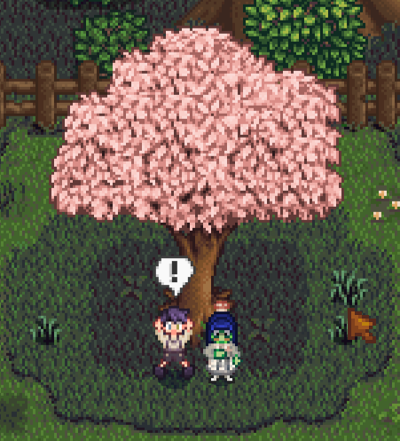
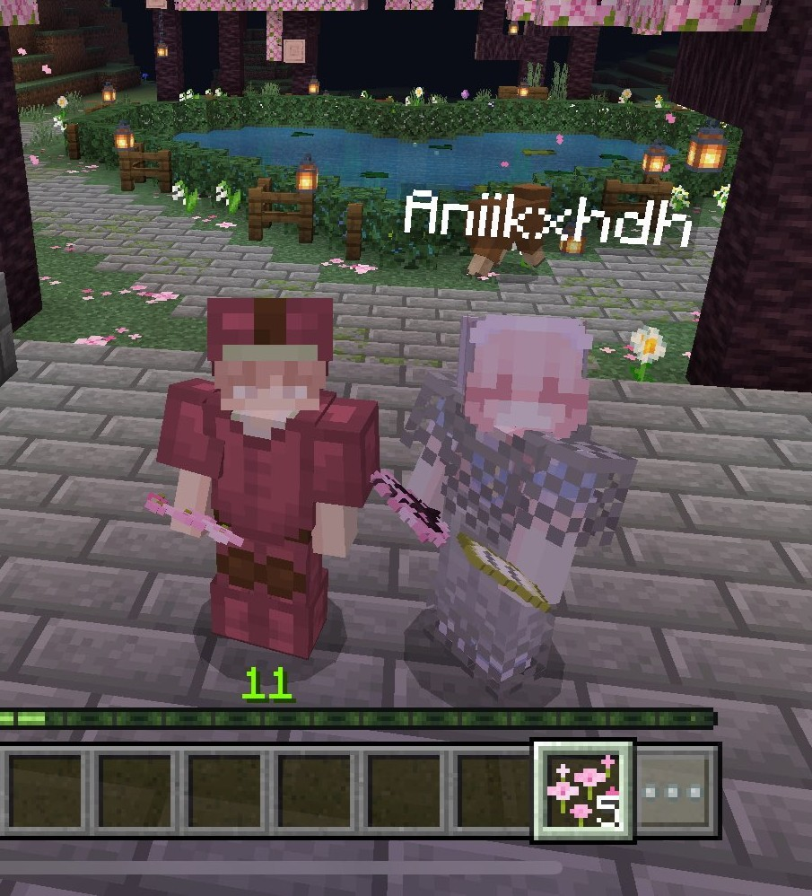
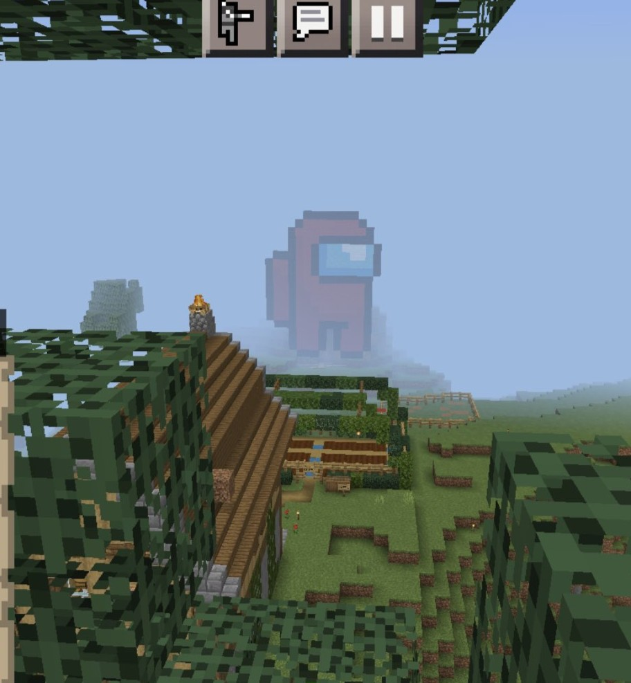
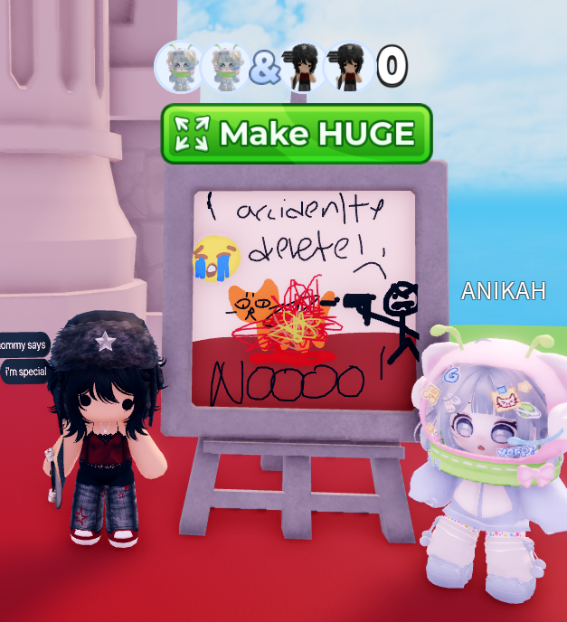
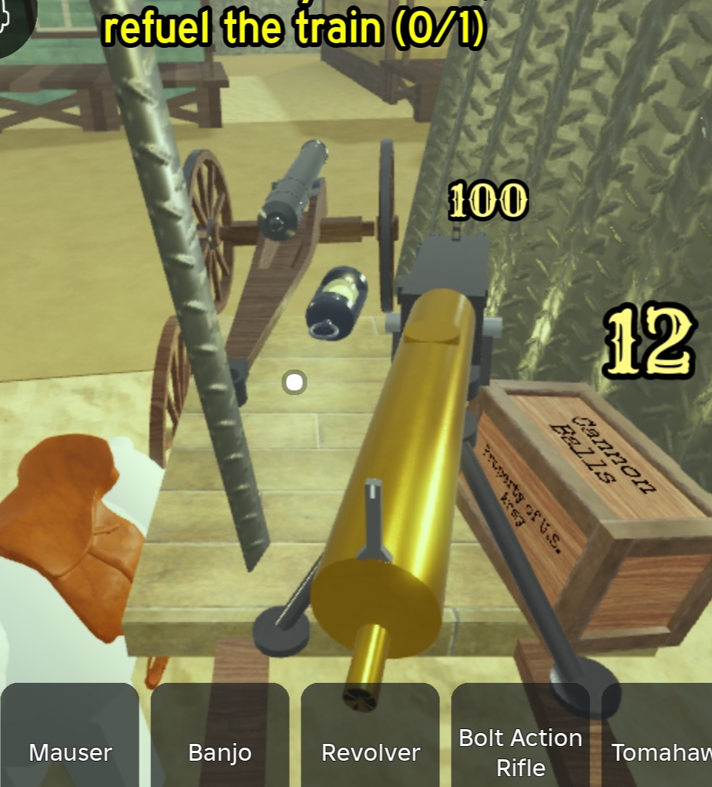
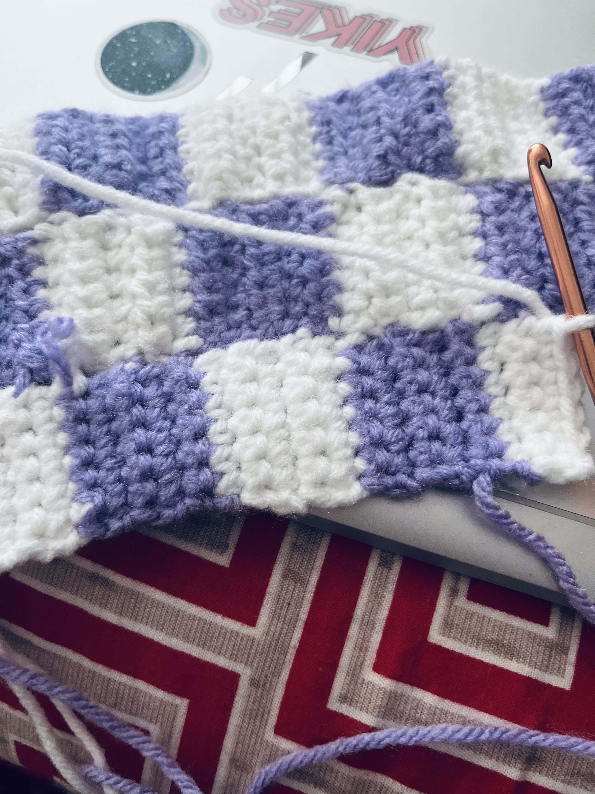
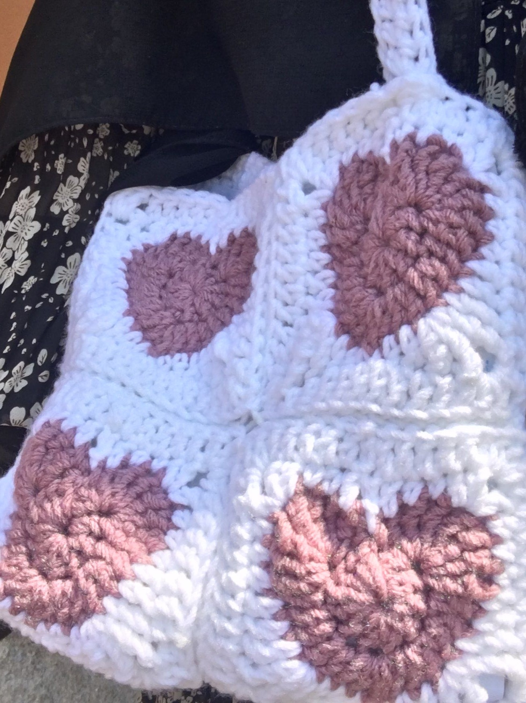
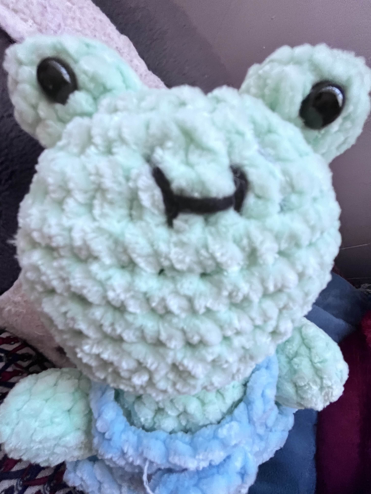

Games
I enjoy playing games during my free time. Some of my favorites include Roblox, Minecraft, Brawl Stars, Cookie Run: Kingdom, and Stardew Valley.
    Crochet
I like to crochet when I have time. Below are some things I made:
  